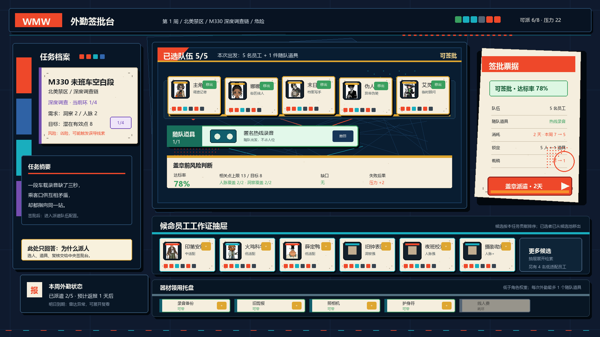
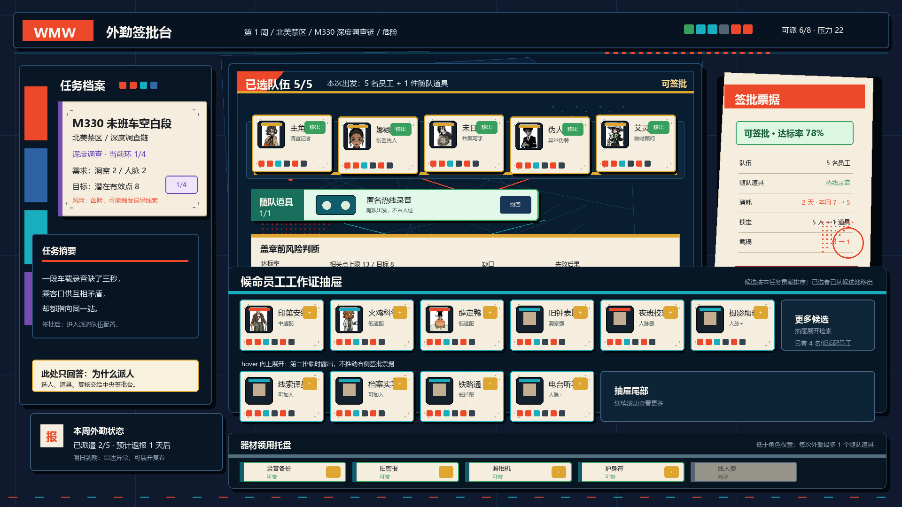
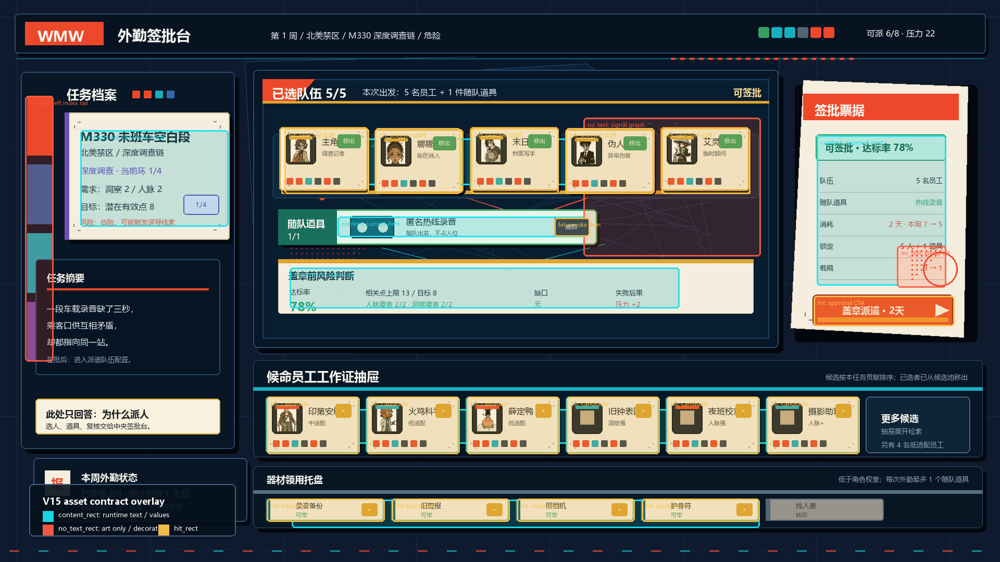

01 · 默认有字容量预览
检查 5 名员工 + 1 件随队道具、达标率 78%、消耗 2 天、右侧盖章 CTA 是否能在一屏内读懂。

本页用于区分 V15 的四类稿件：默认有字容量预览、候选 hover 展开预览、无字底图草稿、资产合同批注图。V15 不是生产真源；它是下一轮高保真无字底图和真实内容风格稿的合同。
检查 5 名员工 + 1 件随队道具、达标率 78%、消耗 2 天、右侧盖章 CTA 是否能在一屏内读懂。

检查候选员工抽屉向上展开第二排，是否不推动右侧签批票据，不把器材托盘挤没。

检查动态文字移除后，物件和安全区是否仍成立。它是 no-text asset master draft，不是最终生产底图。
青色为 content_rect，红色为 no_text_rect，黄色为 hit_rect。这张图只用于生产合同，不是玩家可见效果图。
